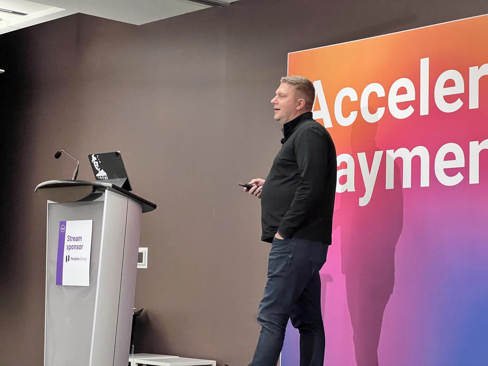
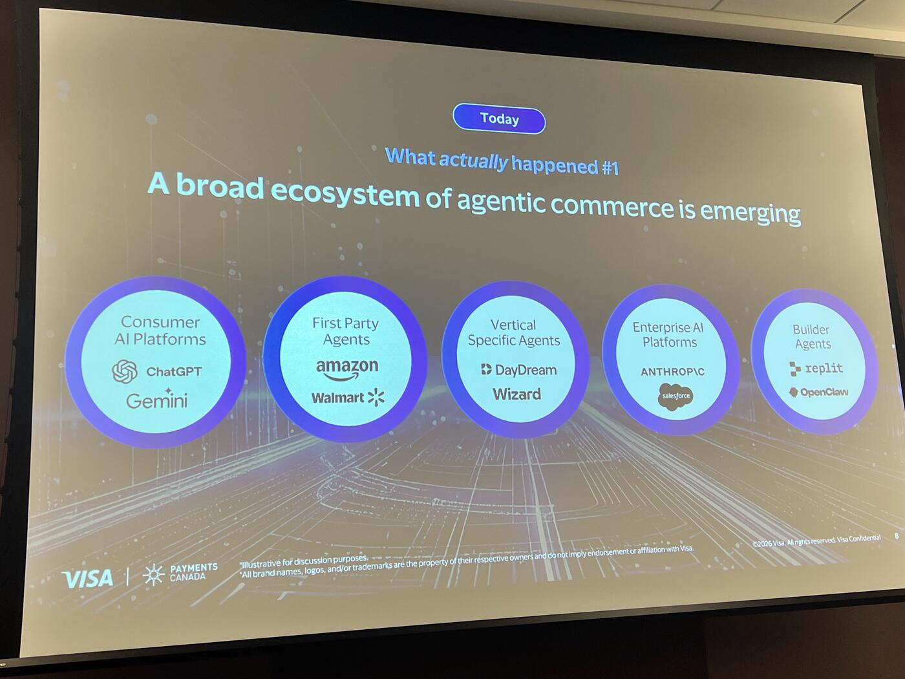
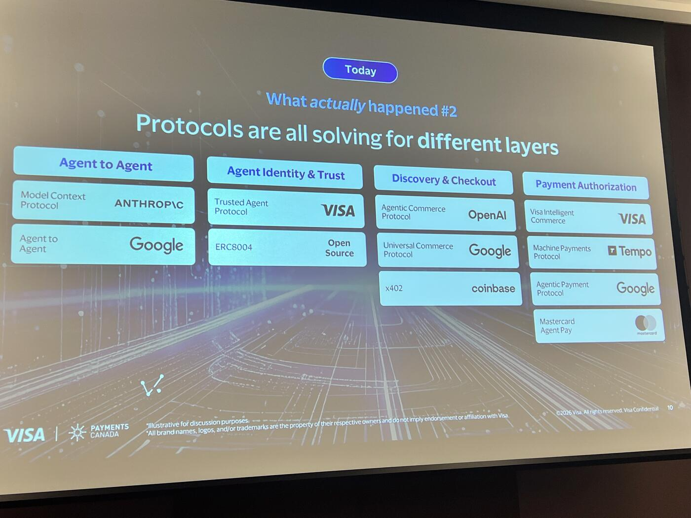
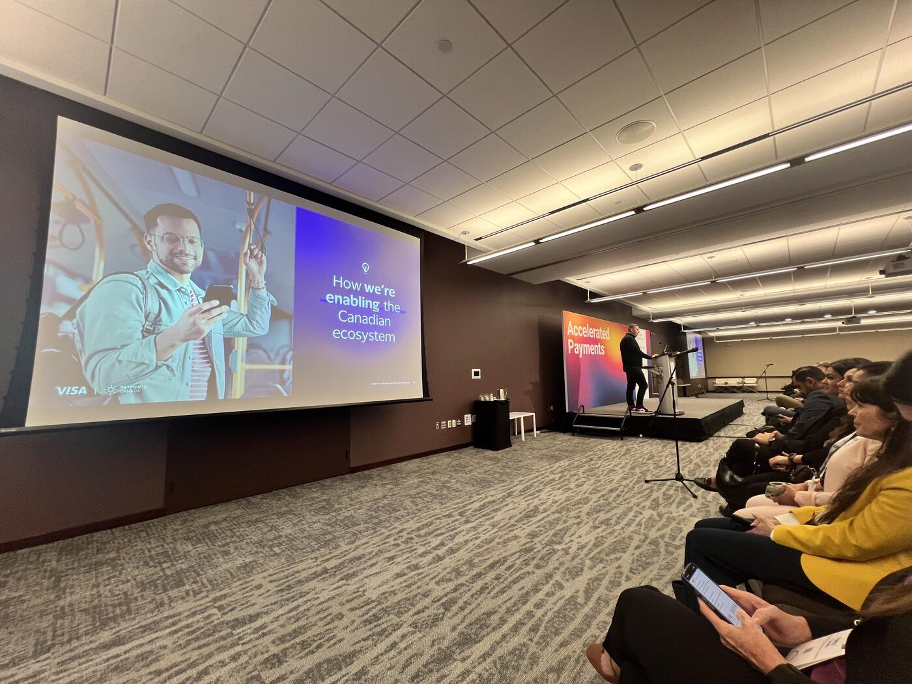
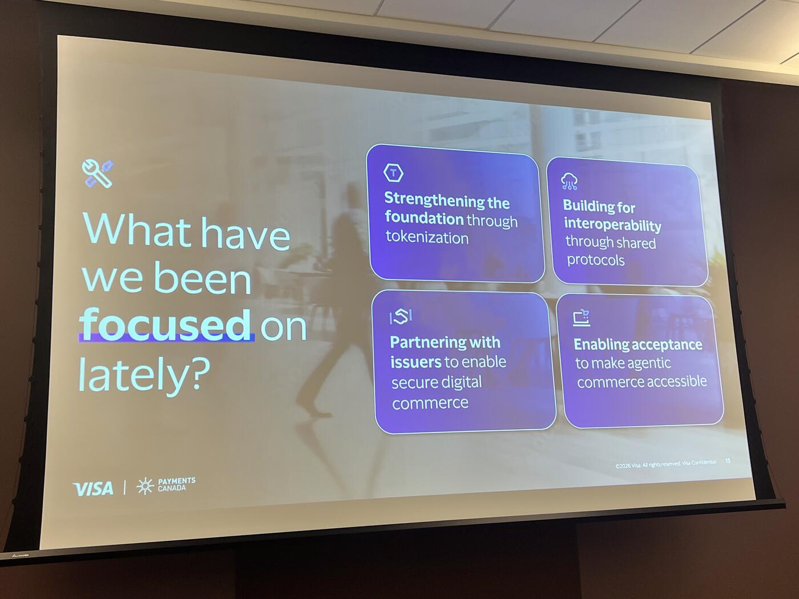

Agentic Commerce: Between Vision and Reality
At the Payments Canada Summit, Dan Iwachiw of Visa Canada opened with a vision that has long captured the imagination of the industry: a personal AI agent seamlessly planning and booking a family vacation — researching options, comparing prices, negotiating terms, and executing the purchase based entirely on a user's preferences. "Although that vision has not yet materialized," he acknowledged, "agentic commerce is now beginning to become operational."
If the future once seemed distant, Iwachiw suggested that the present moment is better understood as an inflection point. "The table is set, the ingredients are on the table, but we haven't fully dug in yet." The industry, in other words, is no longer speculating about agentic commerce — it is grappling with its early realities.
AI Adoption and the Inevitability of Change

Iwachiw grounded his argument in the unprecedented speed of AI adoption. Comparing the rise of platforms like ChatGPT and Gemini to the early internet, he noted that "AI is scaling extraordinarily fast… we're already at a billion users." Yet, despite this scale, "it's still the very, very early days of AI adoption."
This matters because AI is poised to become the primary interface through which people "work, learn, and build." As that shift takes hold, commerce will inevitably follow. "The question is no longer, will AI affect commerce? It's really just the question of how."
Agentic Commerce Has Arrived — But Not as Expected
In many ways, agentic commerce is already here. Consumers are increasingly relying on AI tools to assist with shopping decisions. "Over 50% of people today are already using AI for shopping," Iwachiw said, describing how users leverage these tools to research products, compare options, and build confidence before purchasing.
Yet the way this transformation is unfolding has challenged early assumptions. Initially, many believed that large consumer AI platforms would dominate this space. Instead, Iwachiw described a far more complex landscape: "What's actually happening is broader, messier, and far more interesting."
A diverse ecosystem is emerging, one that includes merchants, vertical-specific agents, enterprise AI platforms, and developer tools embedding payment capabilities. Agentic commerce, he emphasized, will be just as relevant in B2B contexts as it is for consumers.
The Limits of Today's Infrastructure

Another early assumption — that agents could simply navigate existing web interfaces — has proven unrealistic. "The reality is it's much harder than expected," Iwachiw said. In commerce, even minor failures are unacceptable, and current systems were not designed for machine actors.
As a result, the industry is now converging around new machine-native protocols. Referring to what he described as an "alphabet soup" of emerging standards — ACP, UCP, AP2, x402 — he explained that these protocols aim to support different layers of the commerce stack, from identity and trust to discovery and checkout.
"It's extremely messy today," he admitted, noting the rapid pace of announcements and experimentation. Still, he framed this fragmentation as a natural phase in the evolution of a new platform: "This is actually normal… it will settle out."
Autonomy Deferred: The Role of Trust and Friction
Perhaps the most significant gap between expectation and reality lies in autonomy. The industry anticipated that agents would already be executing purchases independently. Instead, "it's simply not happening."
Technical limitations and trust concerns remain significant barriers. Consumers, Iwachiw explained, are comfortable with AI assistance but not yet ready to relinquish full control over decisions and payments.
To illustrate this, he offered a personal analogy. His 16-year-old son, newly permitted to drive, still requires supervision and training. "That's where we are with AI today," he said. "We're not fully ready to let loose." The friction built into the system — lessons, supervision, gradual trust — is not a flaw but a necessary safeguard. "Autonomy is coming," he added, "but it will arrive more slowly than the headlines suggested."
Merchants at the Center of the Transition

While much of the conversation around AI focuses on agents, Iwachiw emphasized that the real burden of transformation lies with merchants. "This will not scale unless merchants do the real work to enable it."
Agents cannot reliably transact through interfaces designed for humans. Instead, merchants must redesign their systems for machine interaction: making product data machine-readable, exposing APIs for cart and checkout, distinguishing between trusted agents and malicious bots, and ensuring secure handling of payment credentials.
"The agentic web will not emerge just because agents get smarter," he said. "It will emerge because merchants redesign commerce for machines."
Building on Familiar Foundations
Despite the apparent novelty of agentic commerce, Iwachiw stressed that it is rooted in familiar principles. The next phase of commerce will be built on the same pillars that enabled e-commerce and mobile commerce: tokenization, authentication, identity, and trust.
Visa, he noted, has long played a role in establishing these standards. Tokenization, in particular, is central to the future. "We want agentic commerce to run on tokens," he said, while acknowledging that the industry has not yet reached full adoption.
The push toward greater tokenization will not only improve security and reduce fraud but also enable richer data exchange between merchants and issuers, supporting better decision-making and dispute resolution.
Visa's Strategic Positioning

As the ecosystem evolves, Visa is positioning itself not as a gatekeeper of a single approach but as an enabler across many. "Our role is not to guess one winner too early," Iwachiw explained. Instead, the company aims to ensure that its payment primitives can operate across the emerging landscape of protocols and platforms.
This strategy is reflected in a series of initiatives, including:
- The Visa Intelligent Commerce sandbox
- A trusted agent protocol
- Intelligent Commerce Connect — a token vault and network designed as an "agnostic on-ramp" to agentic commerce
At a global level, Visa is also advancing its "Agentic Ready" program, working with issuers across regions — including Canada — to test and prepare for agent-initiated payments. Pilot transactions are already underway in controlled environments, signaling tangible progress beneath the surface of broader uncertainty.
A Near-Term Reality
Iwachiw concluded with a measured but confident prediction. While the fully autonomous vision remains on the horizon, the transition has already begun. "I'm pretty confident… that everybody in this room will make some form of an agentic transaction within the next year."
Agentic commerce, in his telling, is neither hype nor inevitability realized — it is an emerging reality shaped by infrastructure, trust, and collaboration across the ecosystem. Its future will depend not only on advances in AI, but on the collective effort to redesign the foundations of commerce itself.
Key Takeaways

- AI adoption is at 1B+ users and still early days — commerce will follow this curve.
- 50%+ of consumers already use AI for shopping research/comparison.
- The "agents browse the web" model has failed; new machine-native protocols are emerging (ACP, UCP, AP2, x402).
- Autonomy is coming "more slowly than the headlines suggested" — trust and supervision are necessary, not flaws.
- Merchants are the bottleneck: agentic web requires merchants to redesign commerce for machines.
- Foundations are familiar: tokenization, authentication, identity, trust.
- Visa initiatives: Intelligent Commerce sandbox, trusted agent protocol, Intelligent Commerce Connect, "Agentic Ready" program.
- Prediction: every audience member will make an agentic transaction within the next year.